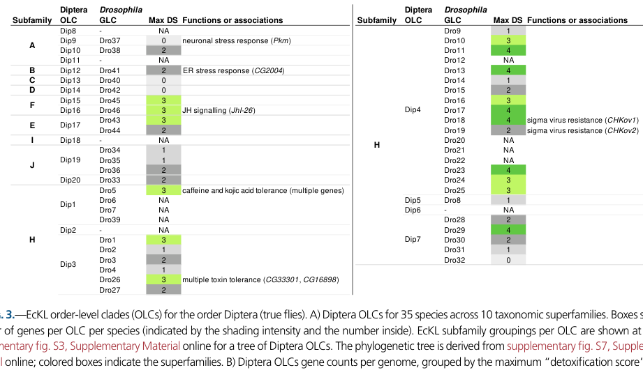

CG6830 is an 891-residue ecdysteroid-kinase-like family protein containing two CHK-like kinase domains. The arthropod EcKL family has expanded into branches proposed to phosphorylate endogenous steroids or xenobiotic compounds. The physiological substrate and catalytic properties of CG6830 itself remain unresolved.
| GO Term | Evidence | Action | Reason |
|---|---|---|---|
|
GO:0106389
ecdysteroid 22-kinase activity
|
TAS
PMID:32540344 Genomic and transcriptomic analyses in Drosophila suggest th... |
UNDECIDED |
Summary: Ecdysteroid 22-phosphorylation is not established for CG6830.
Reason: The cited study explicitly proposes a detoxification-kinase hypothesis and analyzes gene-family evolution and expression. The exact target has two CHK-like domains, but those observations neither establish ecdysteroid as its substrate nor prove loss of kinase activity. Target-specific turnover assays are needed to distinguish endogenous steroid phosphorylation from other EcKL chemistry.
Supporting Evidence:
PMID:32540344
We propose the hypothesis that members of the
arthropod-specific ecdysteroid kinase-like (EcKL) gene family encode
detoxicative kinases.
file:DROME/CG6830/CG6830-uniprot.txt
/note="CHK kinase-like"
|
The research report should be a detailed narrative explaining the function, biological processes, and localization of the gene product. Citations should be given for all claims.
You should prioritize authoritative reviews and primary scientific literature when conducting research. You can supplement
this with annotations you find in gene/protein databases, but these can be outdated or inaccurate.
We are specifically interested in the primary function of the gene - for enzymes, what reaction is catalyzed, and what is the substrate specificity? For transporters, what is the substrate? For structural proteins or adapters, what is the broader structural role? For signaling molecules, what is the role in the pathway.
We are interested in where in or outside the cell the gene product carries out its function.
We are also interested in the signaling or biochemical pathways in which the gene functions. We are less interested in broad pleiotropic effects, except where these elucidate the precise role.
Include evidence where possible. We are interested in both experimental evidence as well as inference from structure, evolution, or bioinformatic analysis. Precise studies should be prioritized over high-throughput, where available.
CG6830 (FlyBase FBgn0037934; UniProt Q9VGJ8; Dro24-1) is a poorly characterized D. melanogaster ecdysteroid-kinase-like (EcKL) protein. Its best-supported annotation is currently a putative cytosolic, ATP-dependent small-molecule kinase, but its physiological substrate, reaction product, pathway, and intracellular localization have not been experimentally established. Phylogenetically, Dro24 maps to EcKL subfamily H, Diptera order-level clade Dip4, and Drosophila genus-level clade Dro24; its composite “detoxification score” is 3, the authors’ threshold for a detoxification candidate rather than a validated assignment. (scanlan2024phylogenomicsofthe pages 7-8, scanlan2024phylogenomicsofthe media 97f2158b, scanlan2024phylogenomicsofthe pages 2-3)
The only direct CG6830 experiment located was reported in August 2024: in a screen of 13 additional EcKL genes, ubiquitous CG6830 misexpression was one of only two interventions—alongside CG5644 misexpression—that caused significant developmental arrest before adulthood. This gain-of-function result shows that excessive CG6830 activity or abundance can disrupt development, but it does not identify the normal substrate, tissue of action, biochemical pathway, or endogenous requirement. (scanlan2024geneticcharacterizationof pages 11-12)
A critical identity issue emerged during verification: Wallflower/Wall is CG13813, not CG6830. The extensive Wall knockout, RNAi, overexpression, tissue-specific, and Cyp18a1 interaction experiments in the same 2024 study must therefore not be attributed to CG6830. CG6830 was tested separately in the additional-gene misexpression screen. (scanlan2024geneticcharacterizationof pages 11-12, scanlan2024geneticcharacterizationof pages 2-3)
| Topic | Best-supported conclusion | Evidence type | Confidence | Important limitation |
|---|---|---|---|---|
| Identity | CG6830 (D. melanogaster), FlyBase FBgn0037934, UniProt Q9VGJ8, also annotated Dro24-1. | Database identifiers supplied for the target; literature cross-check | High | No extensively characterized gene name was found. |
| Domain/family | Encodes a CHK/choline-kinase-like, ecdysteroid-kinase-like (EcKL) domain protein, consistent with a kinase-like small-molecule phosphotransferase. | Domain annotation and family-level comparative analysis | Moderate–high | A kinase-like fold does not establish catalytic activity or substrate; “CHK-like” does not mean checkpoint kinase. (scanlan2024phylogenomicsofthe pages 2-3, scanlan2024phylogenomicsofthe pages 4-5) |
| Phylogenetic placement | Dro24 maps to EcKL subfamily H, Diptera order-level clade Dip4, and Drosophila genus-level clade Dro24; its reported maximum detoxification score is 3. | 2024 phylogenomics | High for placement; moderate for score interpretation | Clade membership and score indicate candidacy, not biochemical function. (scanlan2024phylogenomicsofthe pages 7-8, scanlan2024phylogenomicsofthe media 97f2158b) |
| Direct misexpression phenotype | In a screen of 13 additional EcKL genes, ubiquitous CG6830 misexpression was one of only two constructs, with CG5644, causing significant developmental arrest before adulthood. | Direct transgenic misexpression screen | Moderate | Gain-of-function toxicity does not reveal the endogenous substrate, normal requirement, affected tissue, or mechanism. (scanlan2024geneticcharacterizationof pages 11-12) |
| Catalytic reaction/substrate | Unknown. No purified-enzyme assay, defined substrate, product, phosphate position, or kinetic measurement was found for CG6830. | Evidence-gap assessment | High | EcKL-family chemistry cannot be transferred directly to CG6830. (scanlan2024geneticcharacterizationof pages 11-12, scanlan2024phylogenomicsofthe pages 12-13) |
| Localization | No experimentally established subcellular localization was found; EcKLs are generally predicted to be cytosolic small-molecule kinases. | Family-level prediction | Low for CG6830 | The family prediction is not CG6830-specific localization evidence. (scanlan2024phylogenomicsofthe pages 2-3) |
| Pathway | No specific endogenous signaling or metabolic pathway has been demonstrated for CG6830. | Evidence-gap assessment | High | Developmental arrest after misexpression is too nonspecific to assign a pathway. (scanlan2024geneticcharacterizationof pages 11-12) |
| Detoxification hypothesis | Subfamily-H/Dip4 context and Dro24 detoxification score 3 support a testable role in xenobiotic or small-molecule phosphorylation. | Phylogenomic association and composite candidacy score | Low–moderate | No xenobiotic substrate or detoxification reaction has been demonstrated; family-size associations do not prove individual-gene function. (scanlan2024phylogenomicsofthe pages 7-8, scanlan2024phylogenomicsofthe pages 12-13, scanlan2024phylogenomicsofthe pages 11-12) |
| Ecdysteroid hypothesis | Ecdysteroids are possible family-level substrates, but CG6830 is not established as an ecdysteroid kinase. The two biochemically characterized insect EcKL ecdysteroid kinases are in subfamilies A and D, not H. | Comparative biochemical and phylogenetic inference | Low | No CG6830 assay demonstrates phosphorylation of 20-hydroxyecdysone or another ecdysteroid. (scanlan2024phylogenomicsofthe pages 6-7, scanlan2024phylogenomicsofthe pages 2-3) |
| Confusion warning | Wallflower (Wall) is CG13813, not CG6830. The extensive Wall knockout, RNAi, overexpression, and Cyp18a1-interaction results must not be attributed to CG6830; CG6830 appears separately in the 13-gene misexpression screen. | Literal-identifier/full-text verification | High | Failure to resolve this discrepancy would substantially overstate CG6830-specific evidence. (scanlan2024geneticcharacterizationof pages 11-12, scanlan2024geneticcharacterizationof pages 2-3) |
Table: Evidence-graded conclusions for Drosophila CG6830 separate direct observations from family-level inference and unresolved questions. The table also flags the critical distinction between CG6830 and Wallflower/CG13813.
The requested target is:
The 2024 insect EcKL phylogeny independently places the Drosophila Dro24 lineage within Diptera clade Dip4 and EcKL subfamily H, supporting alignment between the supplied Dro24-1 designation and the expected protein family. (scanlan2024phylogenomicsofthe pages 7-8, scanlan2024phylogenomicsofthe media 97f2158b)
Full-text checking revealed that the 2024 paper’s principal gene “Wallflower” is CG13813, while CG6830 appears as a separate gene in a screen of 13 additional EcKLs. Consequently, results such as Wall null-mutant viability, Wall RNAi artifacts, tissue-specific Wall phenotypes, and the failure of Cyp18a1 mutation to suppress Wall toxicity are not CG6830 data. (scanlan2024geneticcharacterizationof pages 11-12, scanlan2024geneticcharacterizationof pages 2-3)
This distinction also means that CG6830 should not be called Wallflower on present evidence. The literature for this specific target is limited rather than ambiguous at the accession level.
The EcKL family comprises insect kinase-like proteins implicated in small-molecule phosphorylation. EcKLs are predicted to be cytosolic enzymes, and family-level evidence connects different members to steroid-hormone metabolism and xenobiotic tolerance. Nevertheless, nearly all individual EcKL substrates remain unknown. (scanlan2024phylogenomicsofthe pages 1-2, scanlan2024phylogenomicsofthe pages 2-3)
The proposed generic chemistry is:
ATP + hydroxyl-bearing small molecule → ADP + phosphorylated small molecule
For xenobiotics, phosphorylation of a hydroxyl group adds a negatively charged phosphate, potentially changing solubility, transport, sequestration, or biological activity. This is a family-level model, not a demonstrated CG6830 reaction. (scanlan2024phylogenomicsofthe pages 1-2)
In this annotation context, “CHK-like” denotes a choline-kinase-like structural/domain relationship, not evidence that CG6830 is a DNA-damage checkpoint kinase such as Chk1/Chk2. Nor does the domain name establish choline as the substrate. Choline/aminoglycoside kinase-like proteins belong to the broader protein-kinase-like structural superfamily, whose conserved core supports ATP binding and phosphotransfer but whose substrate specificities have diverged substantially. Accordingly, CG6830 should not presently be annotated as a protein kinase, checkpoint kinase, or choline kinase on domain name alone.
Only two insect EcKL genes were reported as having strong genetic and biochemical support for ecdysteroid-kinase activity. Both catalyze phosphorylation at ecdysteroid C-22: Bombyx mori BmEc22K lies in subfamily A, whereas Anopheles gambiae AgEcK2 lies in subfamily D and acts on 20-hydroxyecdysone. Insect ecdysteroid conjugates phosphorylated at C-2, C-3, C-22, and C-26 have been reported more generally, but the responsible enzymes are incompletely resolved. (scanlan2024phylogenomicsofthe pages 6-7, scanlan2024phylogenomicsofthe pages 12-13, scanlan2024phylogenomicsofthe pages 2-3)
CG6830 lies in subfamily H, not A or D. The occurrence of confirmed C-22 kinases in two separate subfamilies illustrates why EcKL membership does not establish a shared steroid substrate. The activity may have evolved independently, or related ancestral proteins may have undergone substantial substrate shifts. (scanlan2024phylogenomicsofthe pages 6-7)
Therefore, CG6830’s catalyzed reaction and substrate specificity are unknown. No evidence located demonstrates phosphorylation of choline, 20-hydroxyecdysone, another ecdysteroid, caffeine, an insecticide, a protein, or any other defined substrate.
Scanlan and Robin’s 2024 G3 study screened 13 additional Drosophila EcKL genes using pre-existing UAS open-reading-frame lines with ubiquitous tub-GAL4-driven misexpression. Only CG6830 and CG5644 caused significant developmental arrest before adulthood. CG5644 subsequently received a separate prothoracic-gland test, but comparable mechanistic follow-up was not reported for CG6830. (scanlan2024geneticcharacterizationof pages 11-12)
This result supports three limited conclusions:
It does not establish that CG6830 is normally essential, that developmental regulation is its primary role, or that arrest is caused by ecdysteroid depletion. Overexpression can create nonphysiological substrate depletion, ectopic product accumulation, ATP burden, protein misfolding, or activity in tissues where the endogenous protein is absent. The precise arrest stage, tissue dependence, rescue, catalytic-dead control, endogenous loss-of-function phenotype, and relevant metabolite were not established in the located CG6830-specific evidence. (scanlan2024geneticcharacterizationof pages 11-12)
The strongest current hypothesis is a role in small-molecule or xenobiotic metabolism. In the 2024 phylogenomic classification, Dro24 belongs to the expanded subfamily-H Dip4 clade and has a maximum detoxification score of 3. The score integrated properties such as phylogenetic stability, chemical induction, and tissue-specific expression; DS ≥3 was used to designate candidates, not confirmed detoxification enzymes. (scanlan2024phylogenomicsofthe pages 6-7, scanlan2024phylogenomicsofthe pages 7-8, scanlan2024phylogenomicsofthe media 97f2158b)
Several expanded subfamily-H Diptera clades have genetic associations with tolerance to caffeine, kojic acid, ethanol, imidacloprid, or methylmercury. However, these findings concern other clades or genes and cannot be transferred to CG6830 as substrate assignments. The 2024 authors explicitly recommended experimental testing of Dip1, Dip3, and Dip4 genes rather than treating their functions as established. (scanlan2024phylogenomicsofthe pages 7-8, scanlan2024phylogenomicsofthe pages 12-13)
Thus, an appropriate provisional Gene Ontology-style description would be “putative small-molecule kinase; possible role in xenobiotic metabolism”, with low-to-moderate confidence. “Caffeine kinase,” “insecticide-metabolizing enzyme,” or another substrate-specific label would be unsupported.
EcKL enzymes can reversibly phosphorylate ecdysteroids, a mechanism implicated in steroid storage, inactivation, or recycling. Yet CG6830’s subfamily-H placement is distant from the two characterized ecdysteroid 22-kinases in subfamilies A and D. No CG6830-specific enzyme assay, steroid-metabolomics result, endocrine phenotype, or genetic interaction establishes an ecdysteroid role. (scanlan2024phylogenomicsofthe pages 6-7, scanlan2024phylogenomicsofthe pages 2-3)
The developmental arrest caused by CG6830 overexpression is compatible with disruption of hormone metabolism but is not diagnostic: many metabolic disturbances produce pre-adult lethality. CG6830 should therefore remain an ecdysteroid-kinase candidate only at low confidence, not an annotated EcK.
No evidence supports CG6830 as a kinase acting on proteins or as a component of a canonical receptor/second-messenger pathway. Its kinase-like fold is more consistent with ATP-dependent small-molecule phosphotransfer, but even catalytic competence remains unverified for purified CG6830. (scanlan2024phylogenomicsofthe pages 2-3, scanlan2024phylogenomicsofthe pages 4-5)
No CG6830-specific fluorescent localization, immunostaining, biochemical fractionation, secretion assay, or organelle-targeting study was found. The EcKL family is generally described as comprising predicted cytosolic small-molecule kinases, making the cytosol the best working hypothesis. This is a low-confidence inference rather than direct localization evidence. (scanlan2024phylogenomicsofthe pages 2-3)
Likewise, the current evidence does not identify the endogenous tissue in which CG6830 acts. The expression features reported for Wall/CG13813—including midgut and ring-gland expression—must not be assigned to CG6830. (scanlan2024geneticcharacterizationof pages 3-5, scanlan2024geneticcharacterizationof pages 2-3)
The most important recent advances are two 2024 studies:
Diet significantly predicted EcKL family size (F4,135 = 7.56, P < 1.0 × 10−4). Estimated xenobiotic diversity also predicted EcKL copy number in both the complete dataset (F2,137 = 29.4, P < 1.0 × 10−4) and a reduced 115-species dataset (F2,112 = 27.1, P < 1.0 × 10−4). These comparative associations support a broad detoxification role but do not establish the function of CG6830 individually. (scanlan2024phylogenomicsofthe pages 8-9)
The family is highly divergent: 11 of 13 subfamilies had minimum within-subfamily sequence identity below 30%, and most between-subfamily minima were below 20%. This divergence strongly limits substrate transfer by homology alone. (scanlan2024phylogenomicsofthe pages 6-7)
No 2023–2024 study located provided a CG6830 substrate, structure, endogenous localization, or loss-of-function characterization.
CG6830 has no validated clinical, agricultural, or biotechnological implementation. Its potential relevance is prospective:
These are research applications, not established real-world functions.
The highest-priority validation program would be:
The most defensible current description is:
CG6830 encodes a poorly characterized EcKL/choline-kinase-like-domain protein, probably an intracellular ATP-dependent small-molecule kinase. Phylogenomic evidence places it in the subfamily-H Dip4/Dro24 lineage and makes xenobiotic metabolism a plausible hypothesis. Ubiquitous misexpression causes pre-adult developmental arrest, but no endogenous substrate, catalytic product, physiological pathway, loss-of-function phenotype, tissue of action, or subcellular localization has been established.
Accordingly, precise enzyme nomenclature should be deferred until biochemical substrate and product identification.
References
(scanlan2024phylogenomicsofthe pages 7-8): Jack L Scanlan and Charles Robin. Phylogenomics of the ecdysteroid kinase-like (eckl) gene family in insects highlights roles in both steroid hormone metabolism and detoxification. Jan 2024. URL: https://doi.org/10.1093/gbe/evae019, doi:10.1093/gbe/evae019. This article has 11 citations and is from a domain leading peer-reviewed journal.
(scanlan2024phylogenomicsofthe media 97f2158b): Jack L Scanlan and Charles Robin. Phylogenomics of the ecdysteroid kinase-like (eckl) gene family in insects highlights roles in both steroid hormone metabolism and detoxification. Jan 2024. URL: https://doi.org/10.1093/gbe/evae019, doi:10.1093/gbe/evae019. This article has 11 citations and is from a domain leading peer-reviewed journal.
(scanlan2024phylogenomicsofthe pages 2-3): Jack L Scanlan and Charles Robin. Phylogenomics of the ecdysteroid kinase-like (eckl) gene family in insects highlights roles in both steroid hormone metabolism and detoxification. Jan 2024. URL: https://doi.org/10.1093/gbe/evae019, doi:10.1093/gbe/evae019. This article has 11 citations and is from a domain leading peer-reviewed journal.
(scanlan2024geneticcharacterizationof pages 11-12): Jack L Scanlan and Charles Robin. Genetic characterization of candidate ecdysteroid kinases in drosophila melanogaster. Aug 2024. URL: https://doi.org/10.1093/g3journal/jkae204, doi:10.1093/g3journal/jkae204. This article has 5 citations and is from a domain leading peer-reviewed journal.
(scanlan2024geneticcharacterizationof pages 2-3): Jack L Scanlan and Charles Robin. Genetic characterization of candidate ecdysteroid kinases in drosophila melanogaster. Aug 2024. URL: https://doi.org/10.1093/g3journal/jkae204, doi:10.1093/g3journal/jkae204. This article has 5 citations and is from a domain leading peer-reviewed journal.
(scanlan2024phylogenomicsofthe pages 4-5): Jack L Scanlan and Charles Robin. Phylogenomics of the ecdysteroid kinase-like (eckl) gene family in insects highlights roles in both steroid hormone metabolism and detoxification. Jan 2024. URL: https://doi.org/10.1093/gbe/evae019, doi:10.1093/gbe/evae019. This article has 11 citations and is from a domain leading peer-reviewed journal.
(scanlan2024phylogenomicsofthe pages 12-13): Jack L Scanlan and Charles Robin. Phylogenomics of the ecdysteroid kinase-like (eckl) gene family in insects highlights roles in both steroid hormone metabolism and detoxification. Jan 2024. URL: https://doi.org/10.1093/gbe/evae019, doi:10.1093/gbe/evae019. This article has 11 citations and is from a domain leading peer-reviewed journal.
(scanlan2024phylogenomicsofthe pages 11-12): Jack L Scanlan and Charles Robin. Phylogenomics of the ecdysteroid kinase-like (eckl) gene family in insects highlights roles in both steroid hormone metabolism and detoxification. Jan 2024. URL: https://doi.org/10.1093/gbe/evae019, doi:10.1093/gbe/evae019. This article has 11 citations and is from a domain leading peer-reviewed journal.
(scanlan2024phylogenomicsofthe pages 6-7): Jack L Scanlan and Charles Robin. Phylogenomics of the ecdysteroid kinase-like (eckl) gene family in insects highlights roles in both steroid hormone metabolism and detoxification. Jan 2024. URL: https://doi.org/10.1093/gbe/evae019, doi:10.1093/gbe/evae019. This article has 11 citations and is from a domain leading peer-reviewed journal.
(scanlan2024phylogenomicsofthe pages 1-2): Jack L Scanlan and Charles Robin. Phylogenomics of the ecdysteroid kinase-like (eckl) gene family in insects highlights roles in both steroid hormone metabolism and detoxification. Jan 2024. URL: https://doi.org/10.1093/gbe/evae019, doi:10.1093/gbe/evae019. This article has 11 citations and is from a domain leading peer-reviewed journal.
(scanlan2024geneticcharacterizationof pages 3-5): Jack L Scanlan and Charles Robin. Genetic characterization of candidate ecdysteroid kinases in drosophila melanogaster. Aug 2024. URL: https://doi.org/10.1093/g3journal/jkae204, doi:10.1093/g3journal/jkae204. This article has 5 citations and is from a domain leading peer-reviewed journal.
(scanlan2024phylogenomicsofthe pages 3-4): Jack L Scanlan and Charles Robin. Phylogenomics of the ecdysteroid kinase-like (eckl) gene family in insects highlights roles in both steroid hormone metabolism and detoxification. Jan 2024. URL: https://doi.org/10.1093/gbe/evae019, doi:10.1093/gbe/evae019. This article has 11 citations and is from a domain leading peer-reviewed journal.
(scanlan2024phylogenomicsofthe pages 8-9): Jack L Scanlan and Charles Robin. Phylogenomics of the ecdysteroid kinase-like (eckl) gene family in insects highlights roles in both steroid hormone metabolism and detoxification. Jan 2024. URL: https://doi.org/10.1093/gbe/evae019, doi:10.1093/gbe/evae019. This article has 11 citations and is from a domain leading peer-reviewed journal.

id: Q9VGJ8
gene_symbol: CG6830
product_type: PROTEIN
status: IN_PROGRESS
taxon:
id: NCBITaxon:7227
label: Drosophila melanogaster
description: CG6830 is an 891-residue ecdysteroid-kinase-like family protein containing two CHK-like kinase
domains. The arthropod EcKL family has expanded into branches proposed to phosphorylate endogenous steroids
or xenobiotic compounds. The physiological substrate and catalytic properties of CG6830 itself remain
unresolved.
existing_annotations:
- term:
id: GO:0106389
label: ecdysteroid 22-kinase activity
evidence_type: TAS
original_reference_id: PMID:32540344
qualifier: enables
review:
action: UNDECIDED
summary: Ecdysteroid 22-phosphorylation is not established for CG6830.
reason: The cited study explicitly proposes a detoxification-kinase hypothesis and analyzes gene-family
evolution and expression. The exact target has two CHK-like domains, but those observations neither
establish ecdysteroid as its substrate nor prove loss of kinase activity. Target-specific turnover
assays are needed to distinguish endogenous steroid phosphorylation from other EcKL chemistry.
supported_by:
- reference_id: PMID:32540344
supporting_text: 'We propose the hypothesis that members of the
arthropod-specific ecdysteroid kinase-like (EcKL) gene family encode
detoxicative kinases.'
- reference_id: file:DROME/CG6830/CG6830-uniprot.txt
supporting_text: /note="CHK kinase-like"
references:
- id: PMID:32540344
title: Genomic and transcriptomic analyses in Drosophila suggest that the ecdysteroid kinase-like (EcKL)
gene family encodes the 'detoxification-by-phosphorylation' enzymes of insects.
findings: []
full_text_unavailable: true
- id: file:DROME/CG6830/CG6830-uniprot.txt
title: CG6830-uniprot.txt
findings: []
{kind=link}